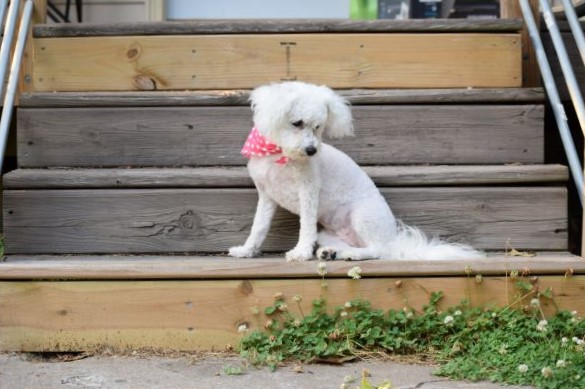

Elizabeth Sloan
Student
This is my first website that I have created by following a tutorial on linkedIn Learning. I am excited to be making this site. I hope that it will be the first of many. For the forseeable future, I will be updatinig it as I learn more about web development.
In this page, I will be including pictures of my pets and there will also be stock pictures that are not owned by me.
Back to KITTENSFeatured Projects
View selected projects below. More information can be found at christinatruong.com.
Baala
I took this picture of my dog, Baala for a photography project. I took the photography class in the summer of 2020. I never edited this picture for the final portfolio, but I still think it's super cute.
View project / case studyFred

Fred doesn’t get out much, but when he does, he enjoys the fresh air and delicious flowers.
View project / case studyEducation
Madison Area Technical College - Madison, WI
Designation received or program name, year attended
Summary or accomplishments.
Scott Community College - Bettendorf, IA
Designation received or program name, year attended
Summary or accomplishments.
Augustana College - Rock Island, IL
Designation received or program name, year attended
Summary or accomplishments.
Work Experience
Optional paragraph for work experience summary. Not a part of the job details. Delete if not being used.
Job title
Company Name
Date at job
Job summary goes here. Add as many paragraphs as you need.
Optional list:
- Delete this list if you don't need it.
- Created...
- Lead...
- Responsible for...
Job title
Company Name
Date at job
Job summary goes here. Add as many paragraphs as you need.
Optional list:
- Delete this list if you don't need it.
- Created...
- Lead...
- Responsible for...